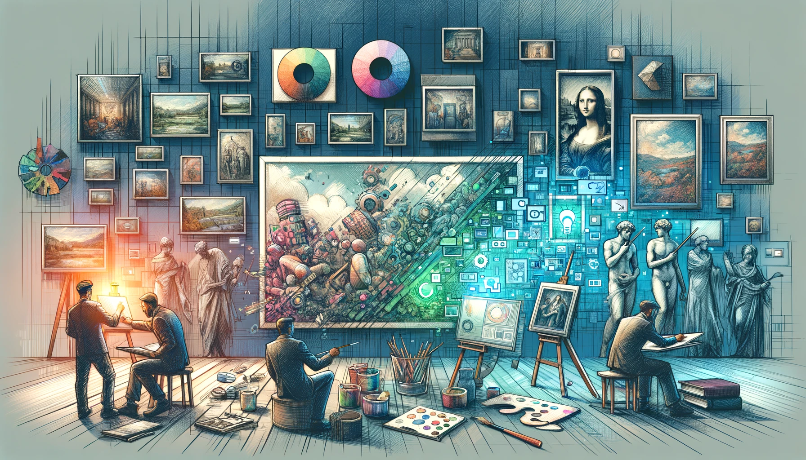
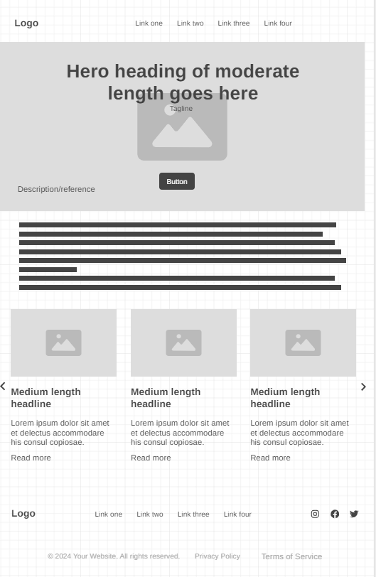
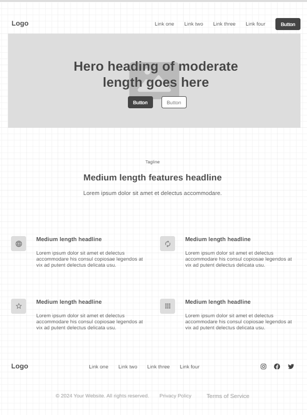
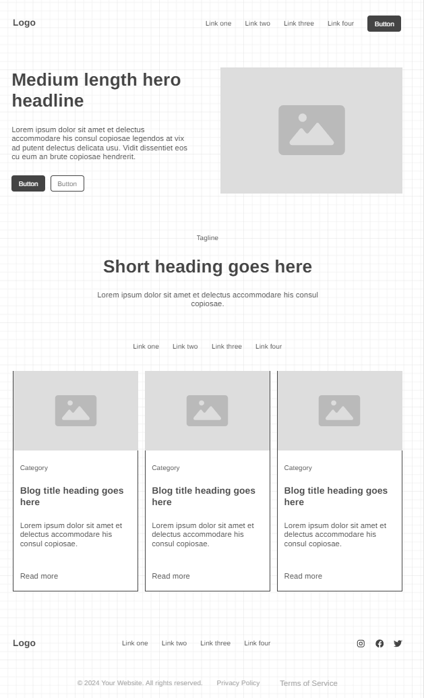

Overview
Purpose
The purpose is to help users start their journey in digital art. It provides information on different digital art forms as well as resources helpful for any digital artist.
Audience
The website is for those interested in a digital art and want a guide. This site is for those that need art resources.
Branding
Website Logo
 Digital art icons created by Freepik - Flaticon
Digital art icons created by Freepik - Flaticon
Style Guide
Color Palette
Palette URL: https://coolors.co/e9e5c2-8eb9a6-156e58-f4cd64-f28327| Primary | Secondary | Accent 1 | Accent 2 | |
|---|---|---|---|---|
| Accent 3 | ||||
| #231942 | #9F86C0 | #E0B1CB | #5E548E | #BE95C4 |
Typography
Heading Font: dotgothic16
Paragraph Font: agdasima
Normal paragraph example
We've all been in the scenario where we need to write an essay, but with no ideas to speak of that would make us want to write more than one page. Whether for school, work, or creative endeavors, they all start from a kernel of an idea. My goal is to help you find that kernel.
Colored paragraph example
If you find just the right source, even the most mundane and tedious assignment can create an easy flow of inspiration from start to finish.
Navigation
Site Map
Content
Home page
An intro to entice users to the website Attribution to any artist's work included. A sliding collage of different art works using various digital mediums. Each will only have a label of who the artist is and what kind it is.
Images for the Home page

Art Forms
Each will have a description and an approximate earning for jobs related to it, jobs will be listed Ex. Sprite Art Can Include: 2D Characters, Assets, and Backgrounds; Web Icons Jobs: Game Art Designer, UI Designer Wage: $59.60 an hour, $123,135 per year
Images for the Page 2
Resources
Tablets and Pens based on price listed Software for art with price listed Online Walkthroughs through videos Online References links for various topics Specialized resources depending on art medium
Images for the Page 3

Wireframes
Create three wireframes for your site. One for each page and list them here
Home
A scroll like button available to look at examples of digital art.
Art Forms
Will have many more card for each medium. Animations will mainly be here.
Resources
Cards are filterable. The links overhead are intended to create the filters.
